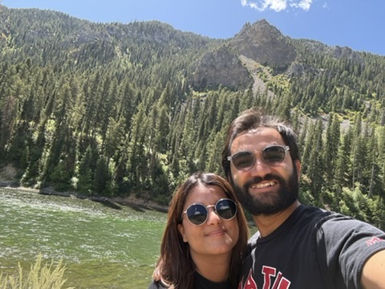

About Me

I am a Ph.D. student in Physics at the University of Utah, with a focus on the Department of Physics & Astronomy. I am involved in the **IceCube Neutrino Detector** collaboration.
I am passionate about exploring new technologies and am eager to apply my research skills to solve complex problems.
Academic
Space for my academic
My Research
My research expands across three distinct areas. Click on a link in the sidebar to view a detailed description of each field.
← Back to Research
Solar Panels & Renewable Energy
For the next-generation South Pole Experiment, my work focuses on a feasibility study of renewable energy at the South Pole. The primary focus is on solar panels, but the research also includes wind power as a secondary source.
My research involves both **field testing** and **large-scale simulations** to determine the viability and optimal design for a renewable energy system in the extreme polar environment. This work is critical for ensuring the sustainability and efficiency of future scientific endeavors at the pole.
← Back to Research
Neutrino Emission Analysis
Using data from the **IceCube Neutrino Detector**, my research involves a targeted search for neutrino emissions from active galactic nuclei (AGN). I utilize a **disk-corona model** to analyze the data and pinpoint potential astrophysical sources of high-energy neutrinos.
A significant part of this work is **combined analysis**, where I merge two distinct IceCube datasets to improve the signal-to-noise ratio and increase the sensitivity of our searches. This method allows us to conduct more comprehensive studies and make more precise measurements of cosmic phenomena.
← Back to Research
Machine Learning in Physics
My research also extends to the application of **machine learning (ML)** techniques to enhance both of my primary research fields. For the solar panel feasibility study, I use ML models to predict energy generation based on weather patterns and environmental data.
In neutrino analysis, I develop ML algorithms to more efficiently identify and classify neutrino events within the vast datasets collected by IceCube. This approach helps to filter out background noise and focus on the most scientifically valuable events.